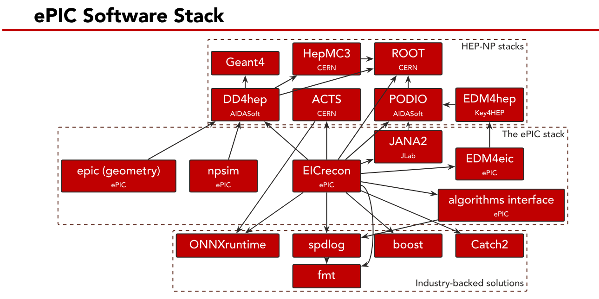

All in One View
Content from EIC France 2026 ePIC Tutorial Introduction
Last updated on 2026-11-06 | Edit this page
Overview
Questions
- What will we be doing in this tutorial?
- What is eic-shell?
- What is in the EIC software stack?
Objectives
- Explore the EIC software stack
Introduction
In this tutorial we will explore some key components and use cases of the ePIC software stack. We will take the files generated in the previous tutorial and process them through the simulation of the ePIC detector. We will then reconstruct the output of the simulation. Finally, we will then analyse the output of this reconstruction and try to identify events of interest.
This is analogous to a real experiment:
- Real experiment
- Collisions \(\rightarrow\) Raw signals in detector \(\rightarrow\) Reconstruct raw signals \(\rightarrow\) Analyse reconstructed output
- Simulation
- Generate events of interest \(\rightarrow\) Raw energy depositions in simulation \(\rightarrow\) Reconstruct raw signals \(\rightarrow\) Analyse reconstructed output
This analogy is intentional. We’re a little way away from “real” ePIC data, so simulations are all we have from now. However, we don’t want to develop a framework that’s only useful for simulations! We should analyse our simulations in the same way that we intend to organise and analyse real data. This should smooth the transition to actual running and ensure that we have people (you!) trained on how to analyse and interpret experimental data from day one.
Introduction - eic-shell
eic-shell is the environment in which we will be running
our simulation and reconstruction. This container comes with a range of
pre-compiled software. The versions of software installed in a given
container version are known and maintained. This is for reproducibility
purposes. If you run a simulation in eic-shell and see an issue, you can
quote the version of the container you’re using when reporting the
issue. This helps narrow down issues rapidly.
When you run
you should load into the container. If you have loaded the container
successfully you should see jug_dev> $User@$Host in your
terminal.
Within eic-shell, you can use the command
to check the versions of lots of software. This will provide a large
info dump, you can narrow it down via grep commands. For
example, you can check your container versions via:
to get the specific container image you’re using.
Introduction - The ePIC Software Stack
In simulating and reconstructing EIC/ePIC data, a large range of different software packages are used. Where possible, applicable software from other HEP experiments is utilised. For example ACTS is used for tracking.

A clickable version is available on the eic.github.io page. Much of this software is pre-installed in eic-shell.
Challenge: Check a piece of the software stack
Within eic-shell, pick a piece of the ePIC software
stack from the diagram above and check what version is in use in the
container you’ve just loaded.
Switching Container Version
By default, when we load the container via CVFMS (or update it), we will get the latest nightly release. There are specific reasons you may wash to load a different container version though. To install a specific version, you can run:
when you execute your install command. As an example
26.07.0-stable is the July 2026 (version 0) container.
If you are running on a system with CVFMS (e.g. JLab or BNL farms), you can just run:
to switch to your desired container version.
- The ePIC software stack will be used to simulate and reconstruct our generated events
- The intention is that this stack is as comparable to the “final” experimental software as possible
-
eic-shellcontains pre-compiled versions of a whole host of software - Keep careful track of the container you’re using
Content from Simulating ePIC Events
Last updated on 2026-11-06 | Edit this page
Overview
Questions
- How can we use the simulation of the ePIC detector?
- What geometries are available?
Objectives
- Process our event generator sample through the ePIC detector simulation
Introduction
The ePIC simulation is pre-installed within eic-shell.
The ePIC geometry is defined in the DD4HEP (Detector Description for
High Energy Physics) framework. More info can be found in the tutorials
on DD4HEP
to define ePIC detectors and Using
npsim and Geant4
Crucially, DD4HEP acts as a wrapper around the familiar Geant4 Monte-Carlo simulation toolkit.
Introduction - Setup
To run a simulation, we need to enter eic-shell if we’re
not already there:
Once inside, we need to load in a geometry. We can choose different
options of we want, but we will use epic-main:
Before we run anything, we’ll make a directory to run in to keep things neat:
Copy your generated event file from earlier into this directory too. We’re now ready to simulate!
Running Simulations
We will run our simulation using the npsim command.
npsim vs ddsim
In other tutorials, you may see reference to ddsim as
well as npsim? Is this the same thing?
Not quite. They are very similar, but
npsim effectively runs with a set of extra flags.
Crucially, these flags enable the simulation of optical
photons. As such, npsim should be used whenever
optical photons are important for your output - e.g. in calorimetry or
Cherenkov detectors. For rapid simulations of tracking,
ddsim may be appropriate. Generally for full detector event
simulations, use npsim.
We can check the available flags and options with
there’s lots of options! We’ll narrow down to a few:
-
--compactFile- Very important, this specifies which geometry definition we will simulate with
- Try
ls $DETECTOR_PATHto see the list of available.xmlconfigurations
-
--numberOfEvents- The number of events to process. We’ll keep this low to save time.
-
--inputFiles- The file path for the input
.hepmcfile (or files)
- The file path for the input
-
--outputFile- The file path to output to
-
vX- The verbosity level of the output to screen. X is a number between 1 and 7 corresponding to VERBOSE,DEBUG,INFO,WARNING,ERROR,FATAL,ALWAYS
- E.g.
-v5would selectERROR- We’ll print errors.
We will try running a short simulation on the events we generated earlier:
BASH
npsim --compactFile $DETECTOR_PATH/epic_craterlake_9x130.xml --numberOfEvents 10 --inputFiles Input.hepmc --outputFile Test_10_Events.edm4hep.rootThis should start running, there’ll be a large info dump to screen with various configuration info loading in. It should not take too long to process.
Once it’s done, let’s have a quick look at the file.
Time Saving
For our next step, we’ll want a larger file, I suggest opening a new terminal tab/window and running this simulation in the background as we look at the output we have so far.
We can open it and have a look with ROOT. I recommend you **exit
eic-shell and look at the file in root externally if you
can. If you don’t have ROOT installed locally, you can use the webviewer, but be aware
that it is more limited.
Within the events tree, we can see a large range of
collections. These are primarily collections of hits or
contributions to various detector subsystems. For example,
the EcalBarrelSciFiHits collection. This collection
contains information on the energy and
position, as well as cellID of various hits
for this detector subsystem. There’s also
contributions_begin and contributions_end
items which can be used to trace back the individual contributions to a
given hit.
If you check other Hits type collections, you’ll see
very similar content. Some may have more or less info. Also of interest
is the MCParticles collection. This contains the original
MC information from our input file. This is retained so we can always
check the actual input for a given event.
For analysis purposes, we may want this information to study the response of a particular detector in a lot of detail, or perhaps to develop a new reconstruction algorithm. Generally though, this information isn’t particularly useful if we want to do a physics analysis. We need to reconstruct our events first. We’ll do this in the next part of our lesson.
The Afterburner
We processed our simulation output “as is”. In doing so, we’ve
ignored the impact of beam effects on our initial and final state
particles. We could add these effects in using the afterburner. This piece
of software adds in a large combination of effects to our MC file,
including the beam crossing angle, beam divergences and crab cavity
impacts. The overall effect is to slightly alter components of the beam
and final state particle momentum. For realistic physics simulations, we
should generally apply the afterburner. Doing so is simple, within
eic-shell we can simply run:
where <<preset>> is the beam configuration
preset to use and <<Output_File>> is the output
file to write to (do not include a file suffix). Other options and flags
are available, as usual, try abconv -h.
Note that the afterburner will try to automatically detect the beam
configuration if the -p option is not used. Available
presets can be seen from the output of abconv -h, but some
are not printed by default. See Lines
2110-2166 for the fill list of configurations available.
- Before running the simulations in
eic-shell, we need to load in a detector config -
npsimshould be used for simulations generally - Simulations can take some time to run
- The output is largely cell/element level hit distributions
- MC truth info is retained in the simulation output
- When simulating physics events, we should afterburn our input first
Content from Reconstructing our Simulated Output
Last updated on 2026-11-10 | Edit this page
Overview
Questions
- What is EICrecon?
- What does EICrecon do?
- How do we process events through EICrecon?
Objectives
- Process our simulated events through EICrecon
Introduction
As mentioned at the end of the last page, our simulation output itself isn’t really that useful for physics analysis. We need to reconstruct our events first. In doing so, we will reconstruct things like tracks and clusters from our raw detector hit information. We can then assign these to particles for example.
The ePIC software that does this step for us is called EICrecon. EICrecon is a JANA based reconstruction for the ePIC detector. We can process our simulation output through EICrecon to get reconstructed events that we can then analyse and interpret. As before, we’ll see how we can run EICrecon and some common flags, then we’ll process our output in full as we look at the sample output from a quick run.
Running EICrecon
As with our simulation, EICrecon is installed within
eic-shell. We can check the available options and flags
via:
Again, when we run, we’ll want to provide a few of these flags, namely:
-
-Ppodio:output_file- Specify the file to output to, example usage
-Ppodio:output_file=test_output.root
- Specify the file to output to, example usage
-
-Pjana:nevents- The number of events from our input file to run, example usage
-
-Pjana:nevents=100\(\rightarrow\) run 100 events
-
- The number of events from our input file to run, example usage
-
-Pdd4hep:xml_files- The detector configuration file that was used in the simulation and
to base our reconstruction on. Example usage
-Pdd4hep:xml_files=epic_craterlake.xml- Note that by default,
EICreconwill search for this file in$DECTOR_PATH, so we need to source our detector geometry before runningEICreconstill
- The detector configuration file that was used in the simulation and
to base our reconstruction on. Example usage
Our input file is specified as an argument without a flag. So as an example command to run our 10 event file from before, we would run:
BASH
eicrecon -Ppodio:output_file=Test_10_Events_Reco.root -Pjana:nevents=1000 -Pdd4hep:xml_files=epic_craterlake_9x130.xml Test_10_Events.edm4hep.rootagain, once we run this, we’ll get some configuration info dumped to screen and then it should run relatively quickly.
Let’s look at the output
Time Saving (Again)
As before, due to how long the reconstruction will take, I recommend running a longer reconstruction in the background as we look at our small initial file.
EICrecon Output File
Our output file now contains quite a few more collections. Again,
many of these connect directly to specific detectors. Now though, these
collections relate to reconstructed quantities such as calorimeter
clusters or particle tracks. For example, B0ECalClusters,
is a collection of information tied to clusters in the B0
Electromagnetic Calorimeter. We also have hit level information in some
collections.
There are two new sets of collections we need to take closer look at
though. We now have collections with Associations involved
somewhere in the name. These collections exist to help us map between
reconstructed info and simulated (i.e. MC
truth) information. For simulated data, we can know
which MC truth particle caused a particular track or cluster and map
between the two. This is useful for understanding what has actually
happened in our event and we will explore it further in the next part of
our tutorial. However, note that for real experimental
data, we cannot map between the truth and the
reconstruction in this way. So we need to be careful when using this
power, particularly if we try to make selections of data using this
information.
The other new type of collection is Reconstructed
particles or jets. These collections group together reconstructed
detector information (tracks, clusters, PID etc) and present to us a set
of candidates for each of our events. For example
ReconstructedParticles is a collection of particles that
EICrecon has constructed based upon the detector
reconstruction in the central detector. Looking at this collection, we
see info we could use to construct 4-vectors for particles in our
event.
We can take a quick look at this information directly from the file
with TTree->Draw() style commands. Open the file
with:
Opening Output Files
Remember to open and inspect the resulting ROOT output files in a
local terminal environment outside of
eic-shell. Interactive ROOT graphics and TBrowser
windows typically require a local display environment to render
properly.
then we can use:
to draw a quantity we want (e.g. try putting energy in
place of QUANTITY . By default, ROOT will automatically
draw this to a 1D histogram with 100 bins. These 100 bins will span the
full range of available data. This is often not that
useful. We can instead define a histogram ourselves to draw our
selection to:
will define a new histogram, h1 with NBins
between xLow and xHigh. Most importantly, we
can actually define and impose some selection cuts on the events we draw
too. This does not have to be on the quantity we’re
drawing. For example, we could draw our quantity only for charged
particles with:
C++
events->Draw("ReconstructedParticles.QUANTITY>>h1(NBins, xLow, xHigh)", "ReconstructedParticles.charge!=0")Finally, we could also even provide some draw options:
C++
events->Draw("ReconstructedParticles.QUANTITY>>h1(NBins, xLow, xHigh)", "ReconstructedParticles.charge!=0", "HISTERR")where HISTERR will draw our histogram as a histogram
with error bars.
Challenge: Quick TTree->Draw() Analysis
From your file, draw a histogram of \(P_{z}\) for Recosntructed Particles that have an energy under 20 GeV and are negatively charged.
Draw this histogram with error bars. Configure your number of bins and bin width appropriately (with 10 events this won’t really matter, for 1000, it should start to matter a bit more).
- EICrecon is the reconstruction software for ePIC and EIC simulations
- Our output is a PODIO/ROOT file
- We can quickly analyse and inspect the contents with
TTree->Draw()
Content from Analysing Reconstructed Output
Last updated on 2026-11-11 | Edit this page
Overview
Questions
- How can we analyse our reconstructed output?
- How can we identify a \(J/\psi\)?
- How do we know our reconstructed particles have been selected correctly?
Objectives
- Create a script to open our reconstructed output
- Identify our beam particles from the MCParticles collection
- Identify \(J\psi\) particles and their decay products in the MCParticles collection
- Connect some reconstructed tracks and calorimeter clusters, identify potential electrons/positrons
- Try to find some reconstructed \(J/\psi\)’s
Introduction - EDM4EIC and PODIO
So far, we’ve looked at the files we’ve generated using ROOT.
However, you might have noticed at one point that our file suffix
included edm4eic, and indeed, when opening the file in ROOT
you probably saw some reference to this. This is because the EIC
software stack uses the EDM4eic
(Event Data Model for
EIC).
This data model is defined in a single YAML file - edm4eic.yaml. There are further details (including a diagram of the model) in a different tutorial.
PODIO is the toolkit which we utilise to generate and interface with this data model. PODIO - which stands for Plain-Old-Data Input/Output - reads a YAML data moel file and generates all of the C++ and Python code needed to work with it.
For the remainder of this tutorial, we’re going to use PODIO to analyse our data. We will do so using C++ and ROOT, but note that you can also use Python and ROOT with only a few minor changes.
This is acutally a slightly reworked segment of a broader tutorial from Derek Anderson on Track-Cluster Matching. For the python equivalent versions of the steps below, you could consult this tutorial.
Script Skeleton
To begin with, open a new file, call it whatever you like, but for my
example, I’m opening EIC_France_Analysis.cxx. Copy in the
code below:
C++
#include <edm4eic/ClusterCollection.h>
#include <edm4eic/MCRecoTrackParticleAssociationCollection.h>
#include <edm4eic/TrackCollection.h>
#include <edm4hep/MCParticleCollection.h>
#include <edm4hep/Vector3f.h>
#include <podio/Frame.h>
#include <podio/ObjectID.h>
#include <podio/ROOTReader.h>
#include <Math/Vector3D.h>
#include <Math/Vector4D.h>
#include <TFile.h>
#include <TH1.h>
#include <cmath>
#include <optional>
#include <map>
#include <memory>
#include <set>
#include <string>
#include <vector>
#include <utility>
TH1::SetDefaultSumw2(kTRUE);This block just define various files to include, next, paste in:
C++
void EIC_France_Analysis(
const std::string& in_file = "1000_Events_Reco.root",
const std::string& out_file = "EIC_France_Analysis_Out.root",
const float match_cut = 0.2,
const float ep_min = 0.8,
const float ep_max = 1.2,
const float mass_min = 2.5,
const float mass_max = 3.5
) {
// Open reader and output file ==============================================
podio::ROOTReader reader = podio::ROOTReader();
reader.openFile(in_file);
TFile* output = new TFile(out_file.data(), "recreate");
// Event loop ===============================================================
while (auto entry = reader.readNextEntry(podio::Category::Event)) {
auto frame = podio::Frame(std::move(entry));
} // end event loop
// Calculate efficiencies and save output ===================================
output->cd();
output->Write();
output->Close();
return;
}Function and File Naming
If your file is not called
EIC_France_Analysis.cxx, make sure you change the name of
the void function.
Equally, the input and output filenames are hardcoded in this script. Modify the input to match your input filename and name the output as you like.
As is, this won’t really do anything yet except make a new file,
EIC_France_Analysis_Out.root, which should be blank.
But, we can check it runs via:
if your paths are OK, this should run without issue (and do nothing except make a new empty file of course).
Execute in eic-shell
Unless you have ed4hep and podio installed
locally, run this within eic-shell.
Adding a Getter
A script that doesn’t do anything isn’t particularly useful (hey it could be worse, it could just crash). So let’s make it a bit more useful.
We’ll start by adding a getter to get some info from our
file.
add this any point after the frame is defined, within the event loop. We can add other collections in the same way as we want/need.
Adding some helpers
We’ll also add some helper functions that will be used a little later on:
C++
// Convert edm4hep::Vector3f into a ROOT::Math::XZYVector
// --> Useful for some vector calculations
auto convert_vector_float = [](const edm4hep::Vector3f& edm_vec) {
return ROOT::Math::XYZVector(edm_vec.x, edm_vec.y, edm_vec.z);
};
// Convert edm4hep::Vector3d into a ROOT::Math::XZYVector
// --> edm4hep stores momentum values as doubles, not floats
auto convert_vector_double = [](const edm4hep::Vector3d& edm_vec) {
return ROOT::Math::XYZVector(edm_vec.x, edm_vec.y, edm_vec.z);
};
// Get 4-vector for a particle
// --> Will need to compare rec vs. sim momentum/eta
auto get_lorentz_particle = [](const edm4hep::MCParticle& MCparticle) {
return ROOT::Math::PxPyPzM4D(
particle.getMomentum().x,
particle.getMomentum().y,
particle.getMomentum().z,
particle.getMass()
);
};
// Compare 2 object IDs
// --> Needed for bookkeeping
auto compare_object_ids = [](const podio::ObjectID& lhs, const podio::ObjectID& rhs) {
if (lhs.collectionID == rhs.collectionID) {
return (lhs.index < rhs.index);
} else {
return (lhs.collectionID < rhs.collectionID);
}
};Add these after the getter we added above.
MCParticles
Now that we’ve added a getter and our helper functions, we can
actually try and get some info and do something with it. Our getter got
the MCParticles collection for our frame (i.e. our event).
These are our actual event output, our truth
information. We can loop over all particles in this collection and
create 4-vectors for the MCParticles in our event:
C++
for (const auto& MCparticle : MCparticles) {
const auto MCpart_lorentz = get_lorentz_particle(MCparticle);
cout << MCparticle.getPDG() << " " << MCpart_lorentz.Px() << endl;
}Add this after all of our functions we’ve just added (still within the event loop). Now re-run the macro, we should now get some output.
Histograms
We probably don’t just want to print lots of information to screen though. More useful would be to make some plots of some sort, so let’s do that. Let’s fill some histograms with our information. To begin with, let’s define a histogram:
Add this definition before the event loop begins. We’ve define a 1D histogram to fill with our MC particle \(P_{x}\) values here. So let’s then fill it with this information:
put this after the cout statement before (or replace the statement with it).
Challenge: Add some extra histograms
Add and fill the following histograms to the code:
- Py, Pz, P and E
- \(\eta\)
- \(\theta\)
- \(\theta\) for electrons only
Hint - Think carefully about the number of bins and the binning range of these new histograms
Beam Particles
Our MCParticles collection contains everything we fed into our
simulation from our generated events. This includes the
incoming electron and ion beam. We can easily identify these particles
by using the GeneratorStatus value of our particles.
Beam particles will have a generator status of 4.
Our final state particles have a generator status of 1. Within our loop over MCParticles we can use:
to print the status value.
Challenge: Replot our histogramss
For the histograms we created and filled before, fill them for all non-beam particles.
Make a separate set of histograms for all beam particles and fill them with the incoming electron and ion beam information.
Identifying \(J/\psi\) Particles and Daughters
So far, much of this probably looks like things we could probably do straightforwardly in ROOT without dealing with PODIO. We’ll now look at a very quick demonstration of how we can use PODIO very nicely to pick out something of interest to us. We will use PODIO to quickly identify the decay products of \(J/\psi\) particles:
C++
if (particle.getPDG() == 443) { // J/Psi is PDG 443
std::vector<edm4hep::MCParticle> decays; // An array we will store our decay products in
for (const auto& daughter : particle.getDaughters()) { // Loop over our J/Psi daughter particles
decays.push_back(daughter); // Add the daughter particles to our vector
const auto daug_mom = convert_vector_double(particle.getMomentum());
const float daug_eta = ele_mom.Eta();
const float daug_mag = std::sqrt(ele_mom.Mag2()); // Mag() isn't implemented for XYZVector
cout << daughter.getPDG() << " " << daug_eta << endl;
}add this block after looping over particles in a frame. Now when we run our code, we should print out the PDG code and \(\eta\) value for all of our produced \(J/\psi\) daughters.
Challenge: Find some leptonic decays
Now that we have the block of code to pick out the daughters of the produced \(J/Psi\), let’s take a closer look. Add in:
- A histogram of the momentum, \(P\), of all daughter particles
- A 2D histogram of \(\eta\) for the decay products vs \(P_{J/\psi}\) - the momentum of the initial \(J/\psi\)
- Identify only events where the \(J/\psi\) decayed to an \(e^{+}e^{-}\) pair
- Create an alternative version of the histograms above that are filled only for \(e^{+}e^{-}\) pairs
- Create a 2D histogram of \(P_{e^{+}}\) vs \(P_{e^{-}}\) - the momentum of the positron versus the electron in the \(J/\psi\) decay pair
- Create a 2D histogram of \(\eta_{e^{+}}\) vs \(\eta_{e^{-}}\) - the \(\eta\) of the positron versus the electron in the \(J/\psi\) decay pair
cout lines
Remember to remove or comment out any cout lines if
they’re no longer useful to prevent a lot of printout to screen.
Reconstructed Particles
After doing our simulation, we probably don’t want to just know our MC truth information (indeed, we already knew this before simulating anything). We probably also want to look at our reconstructed information. Which of our events were reconstructed? What did we see in the event?
We will begin by adding some getters to get some track and calorimeter cluster information in the central detector. We’ll then match up tracks and clusters before trying to identify electrons (or positrons) from them. First, the getters:
C++
auto& tracks = frame.get<edm4eic::TrackCollection>("CentralCKFTracks");
auto& clusters_neg = frame.get<edm4eic::ClusterCollection>("EcalEndcapNClusters");
auto& clusters_cen = frame.get<edm4eic::ClusterCollection>("EcalBarrelClusters");
auto& clusters_pos = frame.get<edm4eic::ClusterCollection>("EcalEndcapPClusters");
auto& associations = frame.get<edm4eic::MCRecoTrackParticleAssociationCollection>("CentralCKFTrackAssociations");Add these in the same place as the existing getter for MCParticles. Now, two other helper functions to add:
C++
// Get cluster 3-momentum using its position and energy
// --> Assuming interaction vetex is at origin!
auto get_momentum = [](const ROOT::Math::XYZVector& position, const double energy) {
return energy * position.Unit();
};
// Get distance in eta-phi space between 2 3-vectors
// --> For matching tracks and clusters
auto get_distance = [](const ROOT::Math::XYZVector& vec_1, const ROOT::Math::XYZVector& vec_2) {
return std::hypot(vec_1.Eta() - vec_2.Eta(), vec_1.Phi() - vec_2.Phi());
};Add these alongside the helper functions that we started with. Now, we’re going to loop over our tracks and try to see which (if any of them) match up to clusters in our central barrel EM calorimeter. We’ll also initialise a vector to fill with any candidates we end up with:
C++
std::vector<edm4eic::Track> rec_electrons; // An array we'll fill with our candidate elctrons/positrons
std::set<podio::ObjectID, decltype(compare_object_ids)> used_clusters;
// Begin our loop over tracks
for (const auto& track : tracks) {
const auto trk_mom = convert_vector_float(track.getMomentum()); // Take the track and turn it into a vector
const float trk_eta = trk_mom.Eta();
const float trk_mag = std::sqrt(trk_mom.Mag2()); // Mag() isn't implemented for XYZVectors
float best_distance = 999.0;
std::optional<edm4eic::Cluster> best_match;
for (const auto& cluster : clusters_cen) {
if (used_clusters.contains(cluster.getObjectID())) { // If we've already matched this cluster, skip it
continue;
}
const auto clust_pos = convert_vector_float(cluster.getPosition());
const auto clust_mom = get_momentum(clust_pos, cluster.getEnergy());
const float distance = get_distance(trk_mom, clust_mom);
if ((distance < match_cut) && (distance < best_distance)) {
best_distance = distance;
best_match = cluster;
used_clusters.insert(cluster.getObjectID());
}
} // End loop over central barrel EM calorimeter
// Compare track vs. matched cluster, identify e- or e+ candidates ------------
if (best_match.has_value()) { // Check something was actually matched
cout << trk_mag << endl; // Print the track magnitude - could fill a hist in here :)
}
else{
continue;
}
const float match_ene = best_match.value().getEnergy();
const float trk_ep = match_ene / trk_mag; // Calculate an E/p ratio for the track. For electrons, this should be close to 1
if (trk_mag > 0.0) {
cout << trk_ep << endl; // Print the E/p value out - Could fill a hist in here :)
}
else{
continue;
}
if ((trk_ep > ep_min) && (trk_ep < ep_max)) {
rec_electrons.push_back(track); // Add the e+ or e- candidate to our vector array
}
} // End of loop over tracksAdd this block within our event loop (after the frame has been acquired and the getters set etc).
Challenge: Add the endcaps and some plots
Our block of code above only checks the barrel electromagnetic calorimeter. We added getters earlier for the endcap electromagnetic calorimeters too. Add routines that check the positive and negative end cap calorimeters for track/cluster matches.
Add some histograms and plot for all matched track/clusters in your events that look like electrons/positrons in the central detector:
- 1D histograms of:
- The E/p ratio calculated
- \(\eta\)
- \(P\)
- 2D histograms of:
- The E/p ratio vs \(\eta\)
- \(P\) vs \(\eta\)
\(J/\psi\) Candidates
Now that we’ve identified some potential tracks that look like electrons and positrons, we can try and combine them to see if any look like they could come from the decay of a \(J/\psi\).
We’ll do something similar to our clusters where we retain an array of clusters we’ve checked, and also define vector to store candidates in:
C++
// Get 4-vector for a track with a certain mass
auto get_lorentz_track = [](const edm4eic::Track& track, const float mass) {
return ROOT::Math::PxPyPzM4D(
track.getMomentum().x,
track.getMomentum().y,
track.getMomentum().z,
mass
);
};
std::set<podio::ObjectID, decltype(compare_object_ids)> used_electrons;
std::vector<std::pair<edm4eic::Track, edm4eic::Track>> jpsi_candidates;
for (const auto& electron_1 : rec_electrons) {
for (const auto& electron_2 : rec_electrons) {
if (electron_1.getObjectID() == electron_2.getObjectID()) { // Don't try to combine things with themselves
continue;
}
if (used_electrons.contains(electron_1.getObjectID())) { // If we've looked at our first electron, move on
continue;
}
if (used_electrons.contains(electron_2.getObjectID())) { // If we've looked at our second electron, move on
continue;
}
const auto lorentz_1 = get_lorentz_track(electron_1, 0.000511);
const auto lorentz_2 = get_lorentz_track(electron_1, 0.000511);
const ROOT::Math::PxPyPzE4D total_mom( // Sum up momentum components
lorentz_1.Px() + lorentz_2.Px(),
lorentz_1.Py() + lorentz_2.Py(),
lorentz_1.Pz() + lorentz_2.Pz(),
lorentz_1.E() + lorentz_2.E()
);
const float inv_mass = total_mom.M(); // Calculate the invariant mass
if ((inv_mass > mass_min) && (inv_mass < mass_max)) {
jpsi_candidates.push_back(
{electron_1, electron_2} // If invariant mass of pair is within window, add candidate electron tracks to our candidate vector
);
used_electrons.insert(electron_1.getObjectID());
used_electrons.insert(electron_2.getObjectID());
}
} // End loop over 2nd electron
} // End loop over 1st electronChallenge: Plot invariant mass
For events where a \(J/\psi\) candidate is found, fill a histogram with the calculated invariant mass from the \(e^{+}e^{-}\) pair.
Create and fill a 2D histogram of \(\eta\) vs \(P\) for the candidate reconstructed \(J/\psi\)’s found with this routine.
- Point 1